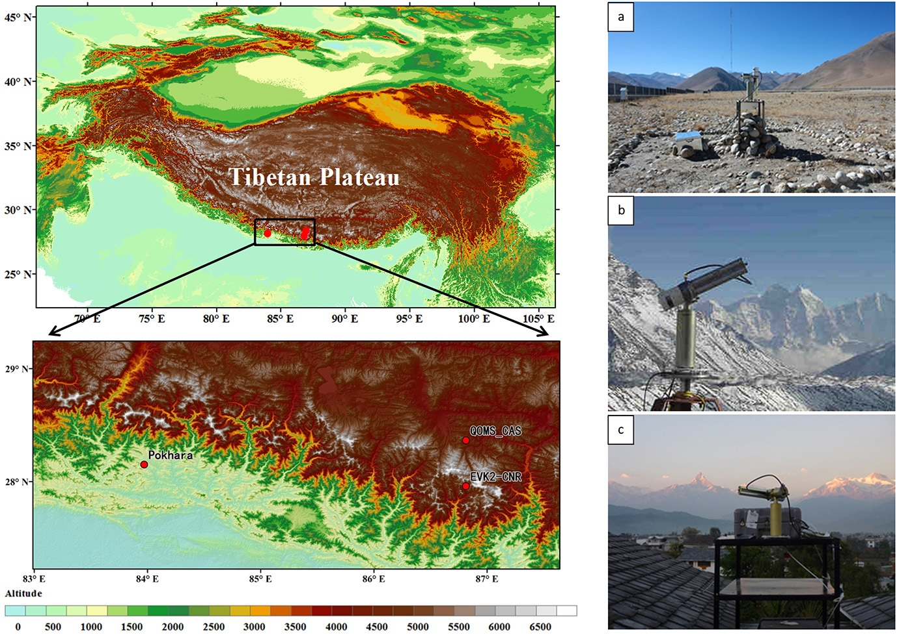

气溶胶是气候变化预测极大的不确定性因子之一。青藏高原研究所马耀明研究员课题组（徐超博士生为第一作者，马耀明研究员为通讯作者）基于Aerosol Robotic Network
(AERONET)地基观测网络，选择了位于喜马拉雅山脉南坡的金字塔和博卡拉站以及北坡的珠峰站，分析了喜马拉雅山地区气溶胶光学属性的季节变化和日变化特征。这一研究成果发表在Atmospheric Chemistry and
Physics (doi: 10.5194/acp-14-3133-2014)上。
研究结果表明，喜马拉雅山地区气溶胶的季节变化主要受大尺度环流影响，而日变化则主要受中尺度天气系统和局地地形的影响。尼泊尔博卡拉站受人为污染物排放影响较大，气溶胶光学厚度(AOD)远远高于其他两个气溶胶背景站点。喜马拉雅山南坡和印度北部地区植被火灾4月频发，使得同时期三个站点细颗粒模态气溶胶升高。降水的日变化形式、人为源排放强度变化、山谷风环流和地表加热作用都可能会影响AOD的日变化。这一成果对于研究青藏高原气溶胶时空变化过程，进而对该地区的天气和气候研究有着重要的意义。

这一研究成果发表在Atmospheric Chemistry and Physics （Xu, C., Ma, Y. M.,
Panday, A., Cong, Z. Y., Yang, K., Zhu, Z. K., Wang, J. M., Amatya, P. M., and Zhao, L.: Similarities and
differences of aerosol optical properties between southern and northern sides of the Himalayas, Atmos. Chem.
Phys., 14, 3133-3149, doi:10.5194/acp-14-3133-2014, 2014.）
论文链接：http://www.atmos-chem-phys.net/14/3133/2014/acp-14-3133-2014.html